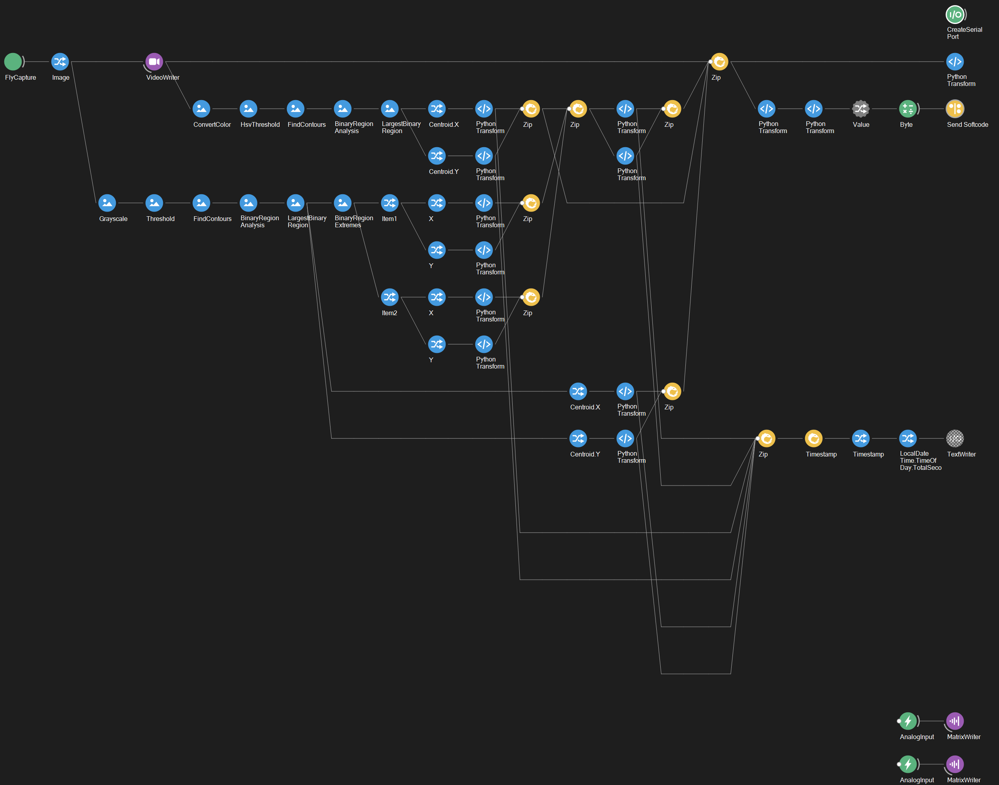
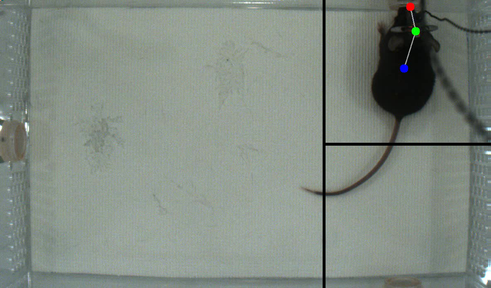

flowchart LR
X["Open Bpod COM Port"]
A["Camera Capture"] --> B["Write Video Frame"]
B["Write Video Frame"] --> C["Get Head Position"]
A["Camera Capture"] --> E["Get Centroid Position"]
C["Get Head Position"] --> G["Estimate Nose Position"]
E["Get Centroid Position"] --> G["Estimate Nose Position"]
G["Estimate Nose Position"] --> H["Send APP Softcode to COM Port"]
G["Estimate Nose Position"] --> I["Write Bonsai TimeStamp"]
Y["NiDAQ Capture"] --> Z["Write Binary Data"]
Bonsai
Bonsai is a visual reactive programming environment that allows users to define and manipulate complex networks of sensors. Bonsai allows for high speed, asynchronous data acquisition and as of November 2023, is actively maintained.
We have a developed a Bonsai protocol for the FMON rig that acquires video from a camera above the arena, then applies custom code to track mouse location and share this information with our Bpod protocols in real time.
Bonsai is written in C# and has a relatively steep learning curve. That said, it is an excellent tool, offering high performance, active maintenence, and a vibrant community of researchers.
FMON Bonsai Schematic
Below is a simplified schematic describing the essential structure of the bonsai-fmon.bonsai file.
The actual Bonsai file consists of a larger series of image filters and IronPython 2.7 code chunks, but the above schematic describes the overall file architecture and all the core tasks Bonsai performs:
- Capturing video
- Estimating realtime subject position
- Sending subject position to MATLAB
- Writing a timestamp for each video frame
- Recording NiDAQ data.
Using Bonsai
Using bonsai-fmon.bonsai is as simple as opening Bonsai and loading the file. The file should not be started manually, as it started automatically by a Python script executed at the beginning of each Bpod session.
Researchers should not need to modify the bonsai-fmon.bonsai file, however it is useful to keep an eye on the video feed and realtime tracking. If a video preview doesn’t automatically pop up, it can be accessed by right-clicking the farthest-right “Python Transform” node, selecting “Show Visualizer” and clicking “Bonsai.Vision.Design.IplImageVisualizer.” This resulting visualizer displays realtime video as well as tracked points (centroid, head and nose) of the mouse and the choice boundaries of the task.

